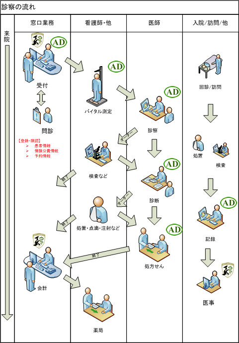
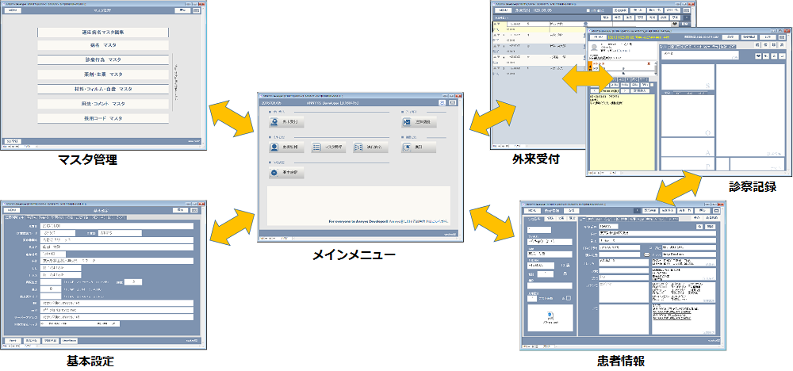
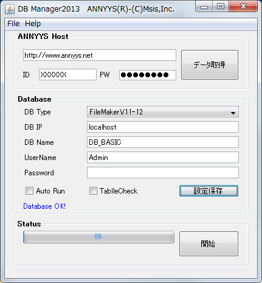

診察の流れ
日セレでの処理 ANNYYS_Dでの処理

※日レセと連携している場合、
全体の構成（概略）
ANNYYS_Dを起動した際に表示される最初の画面で[メインメニュー]になっています。

全他構成の概要としては[メインメニュー]を中心に４つのカテゴリに分かれています。

マスタ更新（DBManager）
ANNYYS_D版では各種マスタ更新用のプログラムを別途用意しています。

DBManager（ディービーマネージャー）
このプログラムは指定しているように、www.annyys.netより更新プログラムをダウンロードし更新処理を行います。
診療報酬情報提供サービスによる
http://www.iryohoken.go.jp/shinryohoshu/
その他
※Java1.6以上の実行環境が必要です。
※インターネットネット環境が必要です。
自動処理に関する内容
AutoRunにチェックを入れている状態で起動のとき。
「データ取得」→「更新作業」を実行します。
「データ取得」時に新しいデータがない場合は１０秒後に自動でプログラムは終了します。
「更新作業」時は更新作業が完了したら１０秒後に自動でプログラムは終了します。
WindowsのタスクスケジューラーやMacOSではcronコマンドなどを使えば定期的に処理が行え手間がかかりません。
FileMakerのバージョン
FileMakerServer環境ではJDBC接続が行えないため、ロカールホスト(locakhost)のANNYYS_Dに対して処理を実行させる必要があります。このときFileMakerPro環境のJDBC接続を利用していますが、DB IP欄には「localhost」「127.0.0.1」アドレスしか指定はできません。（DB Managerと同じマシンで起動させる必要があります。）
FileMakerServerホストのIPアドレスを指定してネットワーク上で処理を実行したい場合はFileMakerServerAdvancedのバージョンが必要です。